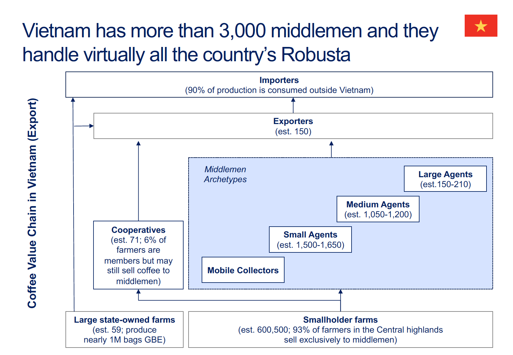

Skill 1: Mapping a Value Chain¶

What It Is¶
Value chain mapping is the process of identifying all actors at each stage of a product's journey from raw input to final consumer, understanding what each actor does, and tracing how they relate to one another. For a bag of coffee on a grocery shelf, that means following the product backward through the retailer, the roaster, the importer, the exporter, the miller, the processor, the farmer, and the input supplier — and then mapping forward again with clarity about who does what, who transacts with whom, and what the chain looks like structurally. The map is not the analysis; it is the foundation on which all subsequent analysis rests.
Why It Matters¶
Without a good map, the analysis falls apart in predictable ways. You miss actors who capture value invisibly — the village aggregator who takes 15% margin without appearing in any official data. You attribute costs to the wrong stage — blaming farm-level productivity when the real constraint is post-harvest processing losses. You overlook parallel channels that serve entirely different markets with different economics — the domestic roaster operating on different price signals than the specialty exporter. And your recommendations target the wrong leverage points — pushing for farmer training when the binding constraint is trader monopoly power. A sloppy map produces a sloppy analysis. The map is where you earn the right to have an opinion about the rest of the chain.
How to Do It¶
-
Identify the end product and work backward. Start with the cup of coffee. Then trace: who roasted it? Who exported the green coffee? Who milled the parchment? Who processed the cherry? Who grew it? Who supplied the inputs — seedlings, fertilizer, tools? Working backward forces you to stay anchored to an actual product rather than drifting into abstraction. It also helps you notice where the chain splits (one roaster may source from multiple exporters across multiple origins) and where it consolidates.
-
List actors at each stage. For coffee: approximately 12.5 million farms globally (over 95% smallholders, per Enveritas) → fewer than 1 million mills → fewer than 10,000 traders → fewer than 100,000 roasters → more than 1 million retailers → more than 1 billion consumers. The hourglass shape — wide at the farm and consumer level, narrow at the trading pinch point — is a defining structural feature of commodity chains. That pinch point matters enormously for understanding who has power and why.
-
Map relationships. There are three types worth distinguishing. Vertical relationships are buyer-seller transactions: the farmer sells cherry to the wet mill, the mill sells parchment to the exporter. Horizontal relationships connect actors at the same stage: cooperatives, farmer associations, trader networks, trade groups. Institutional relationships involve the actors who shape the rules without directly transacting: government regulators, agricultural extension services, certification bodies, development donors. All three types affect how value flows and who captures it.
-
Distinguish parallel channels. Most value chains are not linear — they branch. In coffee: washed versus natural processing channels involve different technology, different labor requirements, and different quality profiles. Cooperative versus private trading channels involve different governance structures and different price-setting mechanisms. Export versus domestic market channels serve different consumers at different price points. Each parallel channel may involve a completely different cast of actors with different economics. Map them separately before trying to compare them.
-
Draw it. The generic coffee chain runs: Input Supply → Production → Processing → Wholesale → Export → then splits to Global Market and Local Market. Label each node with the actor types and approximate numbers. The drawing does not need to be precise to be useful — it needs to be legible enough that someone unfamiliar with the chain can quickly grasp the structure, the scale of each stage, and where the chain branches. A hand-drawn diagram that gets shared and discussed is more valuable than a polished graphic that sits in a slide deck.
Common Mistakes¶
-
Assuming the chain is linear when it branches. Most agricultural value chains have parallel channels that involve different actors, different economics, and different quality outcomes. In Ethiopia, washed coffee moves through cooperatives under the union export structure while natural-process coffee often moves through private collectors and the Ethiopian Commodity Exchange — completely different institutional arrangements, different price signals, different quality regimes. A map that misses this conflates two very different chains.
-
Missing informal actors. Mobile collectors, village aggregators, informal processors — these actors are invisible in official statistics but often handle significant volumes and capture real margin. In Vietnam, the highly competitive middleman economy is precisely why farmers capture roughly 95% of the export price; the middlemen compete the margin away. Ignoring them would lead you to misattribute farmer income to something else entirely.
-
Conflating roles. A cooperative that both processes wet cherry and exports green coffee occupies two stages of the chain. An exporter who also runs washing stations is both a processor and a trader. Map the functions, not just the organizations. A single organization can appear at multiple nodes. This matters for analysis: when you ask who captures value at the processing stage, the answer may be the same entity that captures value at the export stage, and that vertical integration is itself a finding.
-
Drawing the map before talking to people. A desk-based map is a hypothesis, not a finding. The real chain often looks meaningfully different from what secondary sources suggest — actors that official data ignores, stages that are combined or split differently in practice, channels that have emerged or collapsed since the last study was done. Treat your initial map as something to be tested and corrected through stakeholder interviews before you finalize it.
-
Ignoring the local consumption channel. Many value chain practitioners focus exclusively on the export chain because that is where the foreign exchange and the development funding are. But in countries like Brazil, where roughly 40% of production is consumed domestically, or Ethiopia, where there is a significant urban coffee culture and ceremonial consumption tradition, the domestic channel is economically important and serves different quality and price segments. Leaving it out produces an incomplete picture of the chain and may lead you to miss the most viable market opportunity for some producers.
Practice Prompt¶
Draw a value chain map for coffee in a country you are familiar with. Identify at least 5 distinct actor types and at least 2 parallel channels (eg, export vs domestic, washed vs natural, cooperative vs private). For each actor type, estimate the approximate number of actors and describe their primary function. Note where the chain branches and why. Compare your map against at least one secondary source — a published VCA, a trade association report, or a development agency study — and note where your map differs and what might explain the discrepancy.
This is part of a series of six skills for Value Chain Analysis. See also: Skill 2: Breaking Down Value Flows, Skill 3: Unit Conversion and Price Analysis, Skill 4: Benchmarking, Skill 5: Prioritizing Recommendations, Skill 6: Conducting a Value Chain Deep Dive.